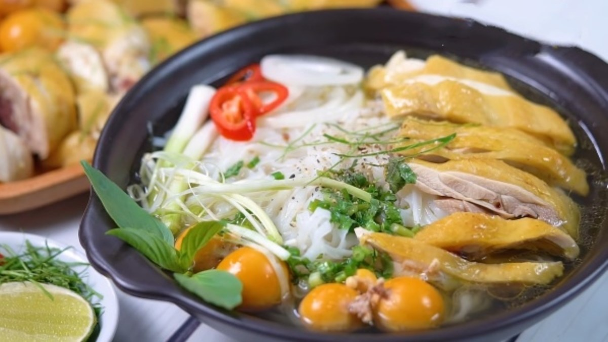

pho ga` ha noi
a memory of the dreaded bao cap era
created during the struggles, pho ga embodies ingenuity and adaptability in a time where beef is restricted by the government. instead of using beef bones to make pho, people decided to make do with chicken bones; thus, the primitive version of the dish is born. since then, hundreds of changes are made until the dish settles to be what is known and enjoyed by generations of hanoian.